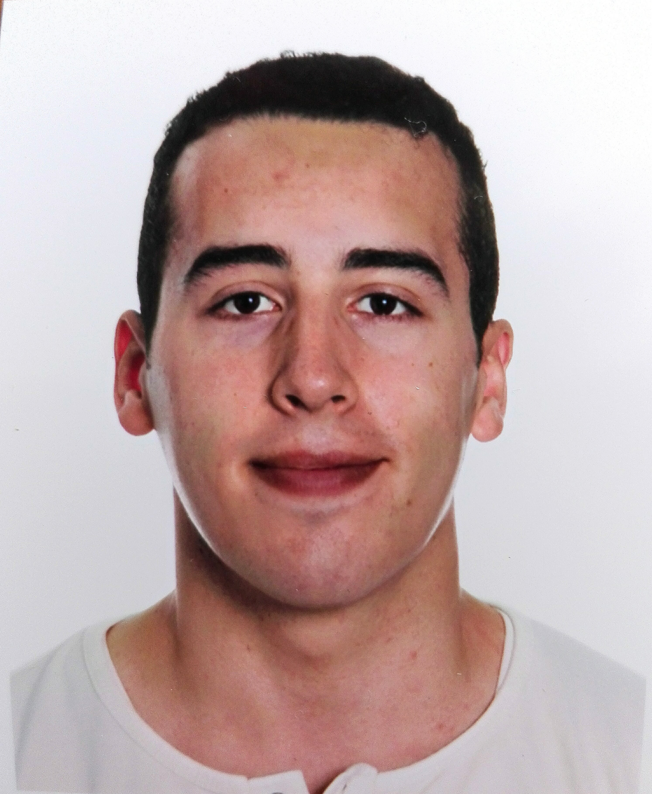

Juan F Pintus | WDD 130
Hello! I'm from Buenos Aires, Argentina I like to watch movies, draw, read, have family time, and play video games. I have three siblings, two sisters, and one brother. I am the last child.
I have lived in Argentina all my life and served in the Argentina Resistencia Mission during the Covid pandemic.
My parents and I tried to move to Spain last year, but we returned to Argentina one month ago to be with my family and friends. I'm thankful for the opportunity to study in this inspired program. I have learned plenty of skills I must apply every day to grow and achieve my goals!
I hope to keep learning, improving, and receiving the things the Lord has prepared for me. I know He knows our needs and will help us when we let Him.